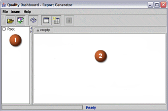

使用质量仪表板界面来查看检查器结果，并访问报告编辑器。
质量仪表板—报告生成器中有两个主面板。

在左窗格显示了一个树，并且该树显示了 Check-Mate 日志文件路径。此树形结构中的条目与使用设置搜索文件夹选项输入以作为搜索目录的目录对应。根目录下的每个条目对应于包含 Check-Mate 日志文件的一个搜索路径。
报告显示区域用于显示报告模板数据，框架顶部的选项卡使得在多个打开的报告之间进行切换变得容易。